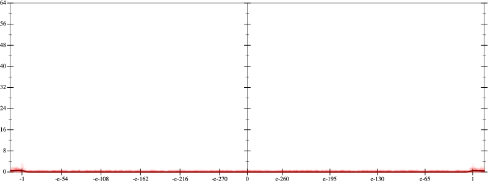
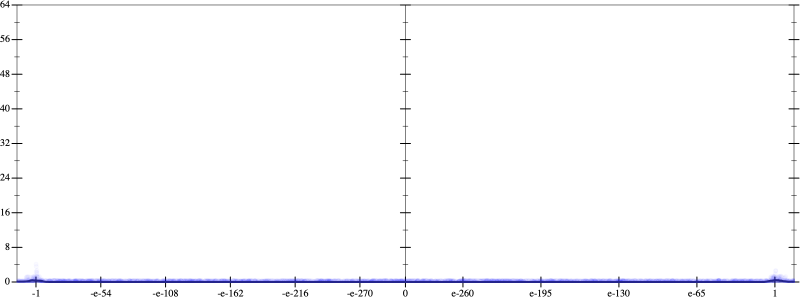
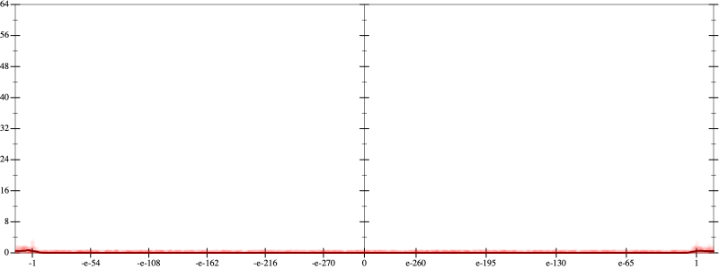
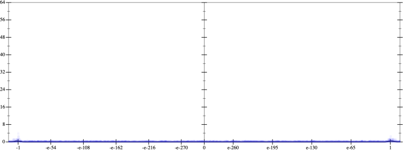
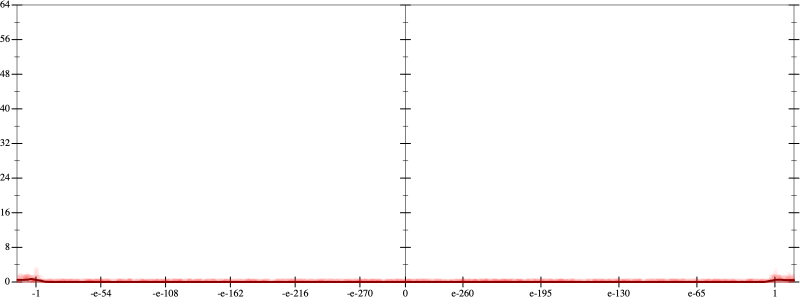
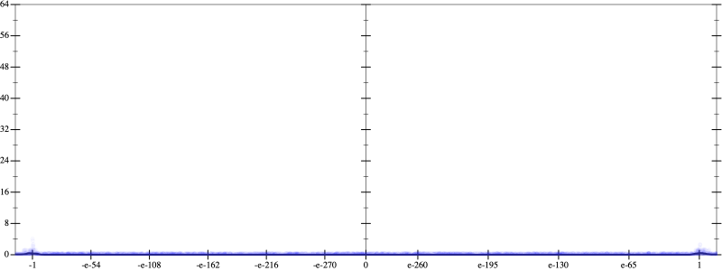

Error
 
Bits error versus x
Bits error versus x
Results
Initial program 0.0
Applied simplify0.0
Taylor expanded around 0 0.0
Time bar (total: 27.2s)Debug log
herbie shell --seed 501386223
(FPCore (x)
:name "6"
:pre (and (>= x -1e+16) (<= x 1e+16))
(+ (+ (+ -120.0 (* 720.0 (* x x))) (* -480.0 (* (* (* x x) x) x))) (* 64.0 (* (* (* (* (* x x) x) x) x) x))))